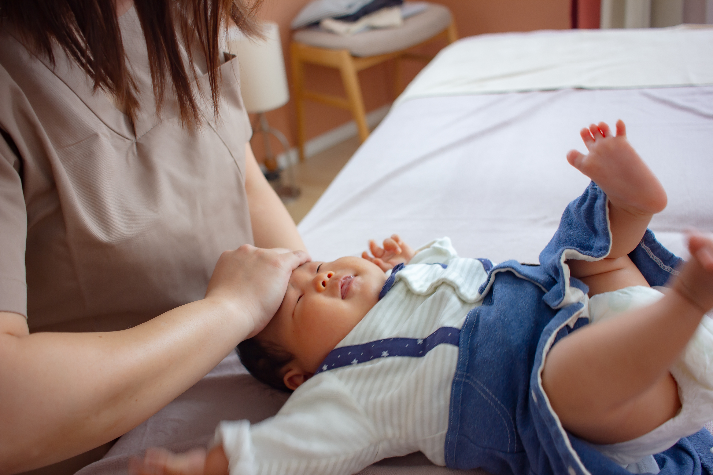
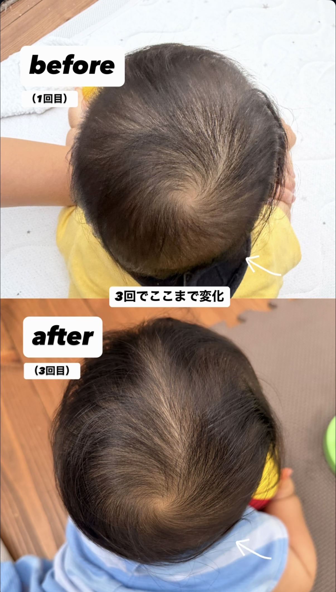

ママの気づきを尊重
「気にしすぎかも」と思わず、日頃感じていることを何でもお話しください。
 salon bebe女性と赤ちゃんのための保健室
salon bebe女性と赤ちゃんのための保健室BABY BODY CARE
ママの「あれ？」って
気持ちを大切に

FOR BABY & MOM
向き癖や反り返り、頭の形、抱っこのしにくさ。
ママがふと感じた小さな違和感は、赤ちゃんを毎日見ているからこその大切な気づきです。
強い力を使わないやさしいタッチで身体のバランスを調整、
ご家庭でできる関わり方もお伝えします。
対象は0〜12か月の赤ちゃんです。医療的な診断や治療は行いません。
症状や発達について心配がある場合は、医療機関への相談をご案内します。
MOM'S LITTLE SIGNS
OUR CARE
「気にしすぎかも」と思わず、日頃感じていることを何でもお話しください。
赤ちゃんの様子を見ながら、やさしいタッチで無理なく進めます。
抱っこや触れ方など、毎日のなかで取り入れられる方法をお伝えします。
BEFORE & AFTER
